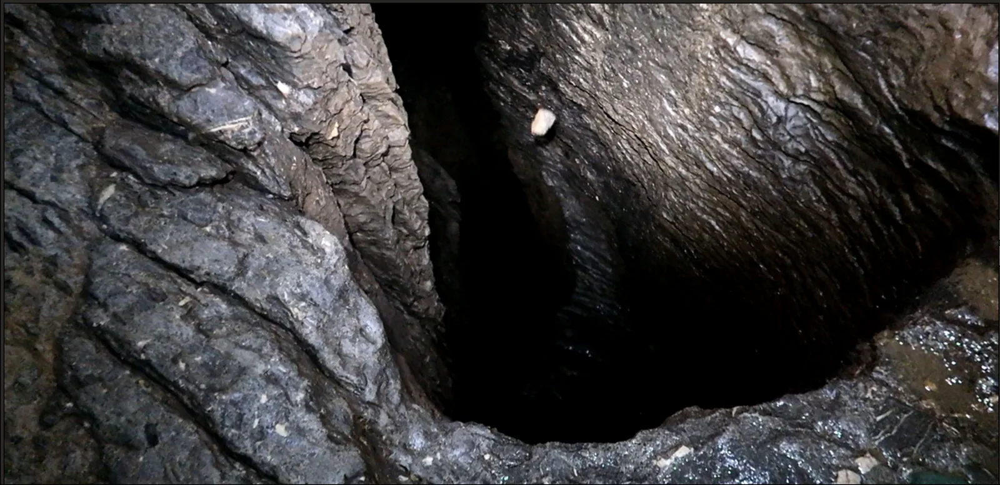

Nedam blizu -1000!
Još jednim vikend istraživanjem u jami Nedam dosegnuta je nova dubina od -921 m i duljina od 1827m! Jama završava vertikalom od barem 30m tako da je tisućica „Nadomak“. Paralelno istražen je i upitnik na -670m nakon…

Vikend istraživanje na -850m još i u zahtjevnoj jami? Pa što da ne.. rekoše par oportunista i par naivaca koji neznanju što ih čeka. I tako složi se vesela ekipica za Nedam i hippie van-om uputi prema Krasnom. Nakon izvlačenja sretnih dobitnika za stiskavac u bivku zbog manjka vreće za spavanje i ispijanja pive suprotno odlukama „komisije“ dolazimo na ulaz jame kasno navečer.
„Pa to je 600 m, to se začas sjurimo, do 2 smo na bivku“ - kaže naivac Sutla. Tako skoro da je i bilo, u 2 smo bili na bivku na -300m, a do bivka na -600m trebalo je još par sati... Rano buđenje i pokret u nove pobjede, Lovel, Sutla i Šarc na dno, a ostali napadaju upitnik na -740m. Iako je upitnik na -740m izgledao perspektivno, nažalost to je samo jedna ogromna dolazna vertikala. Zato je istraživanje manje perspektivnog upitnika na -670m urodilo plodom. Boban je prečkao i zatim se provukao kroz blatno i usko okno u meandru (kasnije nazvano NE-damski grlić) koje se dalje nastavilo u novu vertikalu i ništa iznenađujuće - novi meandar koji ide dalje. Negdje oko ponoći stiže ekipa s dna s lijepim vijestima. Nakon prolaska nekoliko skokića u meandru došli su do -921 m i u nedostatku opreme stali su pred vertikalom od barem 30m.
[caption id="attachment_2710" align="alignnone" width="3508"] I tako kamen sa police na -920 metara poleti u dubinu[/caption]Tisućica je bila, baš kao što i sam naziv novog meandra govori „Nadomak“ i ostaje prava poslastica za iduću ekipu. Unatoč pokojim stenjanjima u suženjima pri izlasku, sretni i zadovoljni s novom dubinom nakon prave HC akcije, vraćamo se kući u kasnim noćnim satima. A kako to izgleda na -920, pogledajte ovdje: https://www.facebook.com/sovelebit/videos/625858861155597/
[gallery ids="2682,2683,2684,2685,2686,2687,2688,2689,2690,2691,2692,2693,2694,2695,2696,2697,2698,2699,2703,2704,2705,2706,2707,2708,2709" type="rectangular"]